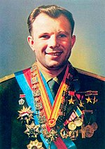
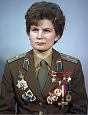
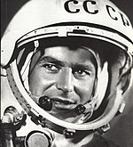
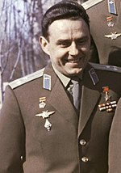
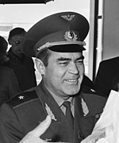
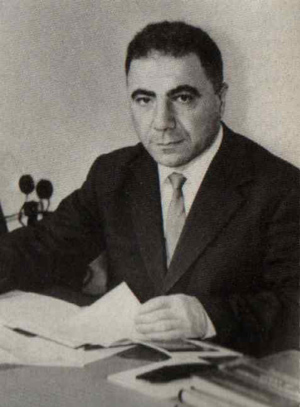
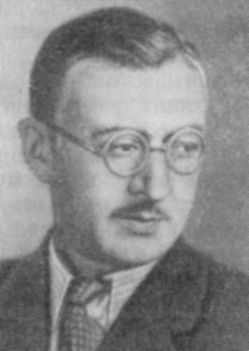
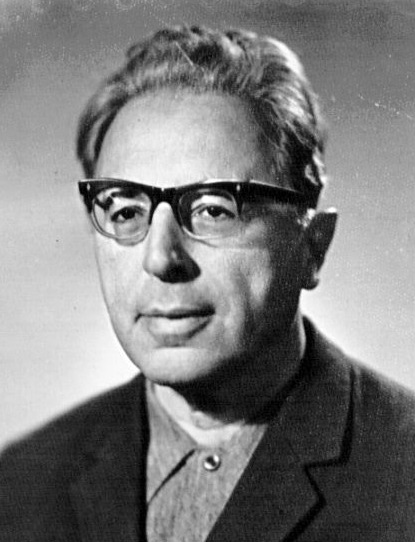

Космонафты СССР и России

Гага́рин Юрий Алексеевич

Терешко́ва Валентина Владимировна

Тито́в Герман Степанович

Комаро́в Владимир Михайлович

Никола́ев Андрия́н Григорьевич
Учённые

Амбарцумян Виктор Амазаспович

Воронцов-Вельяминов Борис Александрович
Зельдович Яков Борисович
